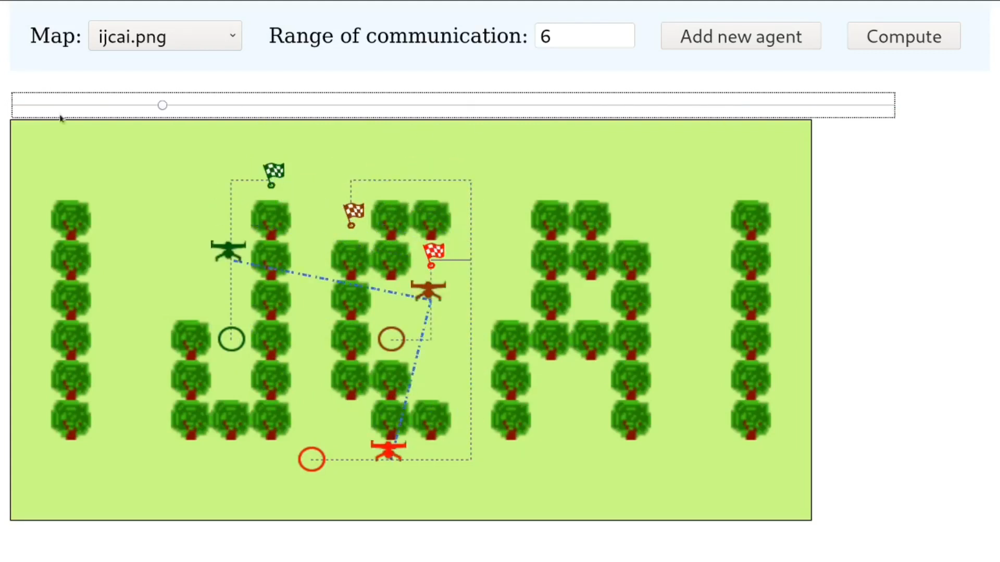

Connected Multi-Agent Path Finding
How Robots Get Away with Texting and Driving
Arthur Queffelec
Ph.D. Defense
RETINA
EIT Project for Drone-Assisted Rescue MissionsPartners
- Foundation Bruno Kessler (Italy)
- JCP-Connect (France)
- Bright Cape (Netherlands)
- Trento's firefighters (Italy)
- Rennes' firefighters (France)
Search & Rescue Missions
Input
Imperfect Information
Output
Ensure Connectivity
Autonomous Path Planning
Settings
| Complete Knowledge | Incomplete Knowledge | |
|---|---|---|
| Guaranteed Connectivity | ||
| Uncertain Connectivity |
Multi-Agent Path Finding
- Start Configuration: $\langle 1,2,8\rangle$
- Goal Configuration: $\langle 7,10,11\rangle$
- Execution: $\langle\langle 1,2,8\rangle,\langle 1,2,5\rangle,\langle 1,5,6\rangle,\langle 5,6,7\rangle,\langle 6,7,11\rangle,\langle 7,10,11\rangle\rangle$
- Cost: 14
Existence Problem
Input: A graph $G = \langle V, E \rangle$, an initial and a goal configuration $c^i$, $c^g$.
Output: Does there exist an execution to reach $c^g$ from $c^i$ without collision ?
Optimization Problem
Input: A graph $G = \langle V, E \rangle$, an initial and a goal configuration $c^i$, $c^g$ and an integer $k$ written in unary.
Output: Does there exist an execution of at most cost $k$ to reach $c^g$ from $c^i$ without collision ?
Collisions
Node Collision
Edge Collision
State of the Art
Coordinated Motion Problem
- Existence of a plan in 3D is PSPACE-hard [Reif, 1979 and Hopcroft et al., 1984]
- Existence of a plan in two dimensional case is PSPACE-hard [Schwartz and Sharir 1983]
- Existence of a plan restricted to unit-square robots is PSPACE-hard [Solovey and Halperin 2016]
15-Puzzle
Optimization of a plan is NP-hard [Ratner and Warmuth, 1986]
Complexity
- Optimization of a plan is NP-hard on planar graphs [Yu and LaValle 2012]
- Optimization of a plan is NP-hard on grid graphs [Yu and LaValle 2013a]
- Existence of a plan is in PTIME [Yu and LaValle 2013b]
- Optimization of plan is in PTIME on Slideable graphs [Wang and Botea 2009]
Variants
- Target-Assignment and Path Finding [Ma and Koenig 2016]
- $k$-Robustness [Atzmon et al. 2018]
- $p$-Robustness [Atzmon et al. 2020]
- Lifelong MAPF [Ma et al. 2017]
Connectivity
Connected MAPF
- Optimization of a plan on undirected graphs is NP-hard [Hollinger and Singh, 2012]
- Existence of a plan on undirected graphs is PSPACE-complete [Tateo et al., 2018]
Existence Problem
Input: A topological graph $G = \langle V, E^m, E^c \rangle$, an initial and a goal configuration $c^i$, $c^g$.
Output: Does there exist a connected collision-free execution to reach $c^g$ from $c^i$ ?
Optimization Problem
Input: A topological graph $G = \langle V, E^m, E^c \rangle$, an initial and a goal configuration $c^i$, $c^g$ and an integer $k$ written in unary.
Output: Does there exist a connected collision-free execution of at most cost $k$ to reach $c^g$ from $c^i$ ?
Connected Configuration: A configuration $c$ of size $n$ is connected if and only if the sub-graph $G_c=\langle V_c, E^c \rangle$ with $V_c = \{ c_1, \dots, c_n \}$ is a connected graph.
Connected Execution: An execution $exec=\langle c^1, \dots, c^k \rangle$ is connected if and only if for all $0< j\leq k$ such that $c^j$ is a connected configuration.
Directed Topological Graphs
$E^m$ and $E^c$ are arbitrary
Optimization CMAPF is NP-hard[Hollinger and Singh, 2012]
Contribution : Existence CMAPF is PSPACE-complete
Tristan Charrier, Arthur Queffelec, Ocan Sankur and François Schwarzentruber, Complexity of Planning for Connected Agents, JAAMAS-20
Undirected Topological Graphs
$E^m$ is undirected
Optimization CMAPF is NP-hard[Hollinger and Singh, 2012]
Existence CMAPF is PSPACE-complete[Tateo et al., 2018]
Neighbor-Communicable Topological Graphs
$E^m \subseteq E^c$
Existence CMAPF is PSPACE-complete[Tateo et al., 2018]
Contribution : Optimization CMAPF is NP-complete
Tristan Charrier, Arthur Queffelec, Ocan Sankur and François Schwarzentruber, Complexity of Planning for Connected Agents, JAAMAS-20
Sight-Moveable Topological Graphs
Existence CMAPF is in PTIME[Yu and LaValle 2013b]
Contribution : Optimization CMAPF is NP-complete
Contribution : Existence CMAPF is in LOGSPACE without collision-free requirement
Tristan Charrier, Arthur Queffelec, Ocan Sankur and François Schwarzentruber, Complexity of Planning for Connected Agents, JAAMAS-20
Sight-Moveable Topological Graphs Cont.
Theorem: Existence of a path between two nodes $s$ and $t$ in an undirected graph is in LOGSPACE[Reingold 2008]
Proposition: A connected execution from $c^i$ to $c^g$ exists iff the communication graph restricted to $c^i$, $c^g$ and the base is a connected graph.
Complete-Communication Topological Graphs
$E^c = V \times V$
Existence CMAPF is in PTIME[Yu and LaValle 2013b]
Optimization CMAPF is NP-hard[Ratner and Warmuth, 1986]
Contribution : Existence CMAPF is in LOGSPACE without collision-free requirement
Contribution : Optimization CMAPF is in NLOGSPACE without collision-free requirement
Tristan Charrier, Arthur Queffelec, Ocan Sankur and François Schwarzentruber, Complexity of Planning for Connected Agents, JAAMAS-20
Connected Conflict-Based Search
Low-Level
Computes the path of an agent given a set of constraints.
High-Level
Searches for a constraint tree to resolve conflict along the execution.
Constraint: A constraint is a tuple $\langle a,v,t, \beta \rangle$ where $a$ is an agent, $v$ is a node, $t$ is a timestep and $\beta \in \{\top, \bot\}$ a boolean.
- $\langle a,v,t, \top \rangle$ : agent $a$ should be at location $v$ at timestep $t$
- $\langle a,v,t, \bot \rangle$ : agent $a$ should not be at location $v$ at timestep $t$
B : $\langle 2, 5, 6, 7, 11 \rangle$
G : $\langle 8, 5, 6, 7, 11 \rangle$
B : $\langle 2, 2, 5, 6, 7, 11 \rangle$
G : $\langle 8, 5, 6, 7, 11 \rangle$
B : $\langle 2, 2, 5, 6, 7, 11 \rangle$
G : $\langle 8, 5, 6, 7, 11 \rangle$
B : $\langle 2, 2, 5, 6, 7, 11 \rangle$
G : $\langle 8, 5, 6, 7, 11 \rangle$
B : $\langle 7, 3 \rangle$
G : $\langle 4, 7, 6 \rangle$
B : $\langle 7, 3 \rangle$
G : $\langle 4, 7, 6 \rangle$
B : $\langle 7, 3 \rangle$
G : $\langle 4, 7, 6 \rangle$
Benchmarks
Arthur Queffelec, Ocan Sankur and François Schwarzentruber, Connected Multi-Agent Path Finding: Generation and Visualization, IJCAI21 - Demo Track
Incomplete Knowledge
CMAPF with Incomplete Knowledge
Initial Knowledge and Discovery
Existence Problems
Input: A topological graph $G$ with "question-marked" movement and communication edges, an initial and a goal configuration $c^i$, $c^g$.
Output: Does there exist a centralized strategy to reach $c^g$ from $c^i$ ?
Output: Does there exist a decentralized strategy to reach $c^g$ from $c^i$ ?
Optimization Problems
Output: Does there exist a centralized strategy to reach $c^g$ from $c^i$ of cost at most $k$ ?
Output: Does there exist a decentralized strategy to reach $c^g$ from $c^i$ of cost at most $k$ ?
Strategy:
An execution
Acquired Knowledge
$\longmapsto$
Next vertex to go
Centralized Strategy
Decentralized Strategy
Complexity Results
| Decentralized | Connected | |
|---|---|---|
| Optimization | NEXP-complete | PSPACE-complete |
| Existence |
Additional Results
- Existence of strategies on undirected graphs is trivial
- All results hold with a base station
- All results hold with collision-free constraint
- PSPACE-completeness results hold on planar graphs
Arthur Queffelec, Ocan Sankur and François Schwarzentruber, Planning of Connected Agents in Partially Known Environments, CAI-21
Contribution Overview
Journal
Conference
Demo
| Topo. Graph\Problem | Existence CMAPF | Optimization CMAPF |
|---|---|---|
| Directed | PSPACE-complete [Charrier et al., JAAMAS-20] | NP-complete [Hollinger and Singh, 2012] |
| Undirected | PSPACE-complete [Tateo et al., 2018] | |
| Neighbor-Communicable | NP-complete [Charrier et al., JAAMAS-20] | |
| Sight-Moveable | LOGSPACE [Charrier et al., JAAMAS-20] | |
| Complete-Communication | NLOGSPACE [Charrier et al., JAAMAS-20] |
Coverage
| Topo. Graph\Problem | Existence CMACP | Optimization CMACP |
|---|---|---|
| Directed | PSPACE-complete [Charrier et al., JAAMAS-20] | NP-complete [Charrier et al., JAAMAS-20] |
| Undirected | ||
| Neighbor-Communicable | ||
| Sight-Moveable | NLOGSPACE [Charrier et al., JAAMAS-20] | |
| Complete-Communication |
Imperfect Knowledge
| Decentralized | Connected | |
|---|---|---|
| Optimization | NEXP-complete | PSPACE-complete |
| Existence |
Tools and Implementation
RETINA early plan creation tool
CMAPF instance and plan visualizer
 CMAPF Solvers github.com/arqueffe/cmapf-solver
CMAPF Solvers github.com/arqueffe/cmapf-solver
Going Further
- CMAPF
- Impact of specific communication system (e.g. line-of-sight, radius)
- Impact of Euclidien movement graphs
- CCBS
- Integrate CBS optimizations (e.g. heuristics, symmetry resolution)
- Improved integration of collision handling
- Incomplete Knowledge
- Centralized case - Canadian Traveler Problem-like solvers
- Decentralized case - Dec-POMDPs solver or MARL approaches